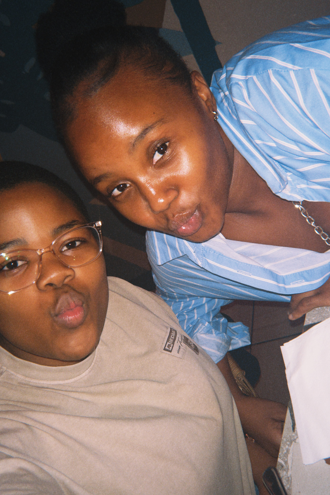
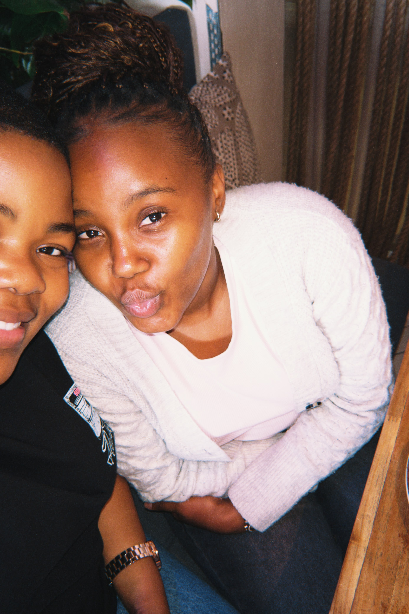

A little something for someone special
Happy Birthday
Nele Wami.
Mfethu angikwazi ukucula mina, ngabe ngiyakuculela😭😭
Made with love, questionable sleep schedules, redbull and a little too much coding. Ngyadlala angisayphuzi iredbull mina, sies🥺
A few little things
about you and me.
Collect your little stars.
Tap every star to reveal a message 🤭
Stars collected: 0 / 3
You've opened them all, Good Girl
One last thing
For my favourite person.
Happy birthday mfethu😂
I know you've been refreshing the other website, shame I couldn't risk you finding this before your birthday😂. I initially wanted to write you a letter then I thought nah let me make something she can always go back to ,something she can't lose, or something that would remind you of how much thought went into making you feel special, very thoughful of me I know😙. Yho I don't even know where to begin😭
It's crazy how someone can enter your life so unexpectedly and somehow become such an important part of it. Somewhere between our conversations, our calls, the random moments, and everything in between, you became someone I cannot imagine my days without. You went from being a nosy tutor to being someone I look forward to talking to everyday. But that is fine cause ukube awuthandi izindaba I wouldn't have met you.
I was planning to cut you off, but since you buy me long islands I'll keep you okweskhashana (ngyadlala Nele wami 😭). I don't think I tell you enough how much you mean to me. I don't know if you realise how much the little things you do mean to me. The calls, the random conversations, you checking up on me, making sure I wake up for class or studying, and even those moments when you fall asleep while I'm busy studying . They might seem like small things to you, but they're the kinds of things I find myself appreciating long after they've happened. You've made space for me in your everyday life, and I hope you know that you've made a very special space in mine too.
I found myself thinking a lot about how I could make your birthday special because I like knowing that something I put together might make you smile. I like remembering what you love and I like planning little surprises for you. I hope I can always be someone you feel comfortable coming to, whether you need to talk or even when you don't feel like talking and need someone to share your silence with, I'll be quiet with you.
You became someone I look forward to talking to every day, someone I want to tell things to, someone I miss, and someone whose happiness matters to me. And I don't think there was one particular moment when that happened. I think I realised it when I started noticing how much I wanted to do for you. How I would think about things that would make you happy, remember little things you had mentioned. I realised that I didn't just enjoy having you in my life but wanted you to feel how much you mattered in mine. Oh I would give you the world if I could Nele🥺.
It brings me so much comfort knowing that I have someone I can talk to everyday about anything, someone who understands me even when I'm not very good at explaining myself, and someone who makes me feel like I don't always have to find the perfect words to be understood. You've brought so much happiness into my life, and you've made me feel cared for in ways that I hope I never become too used to appreciate. You don't even need to do anything extraordinary to make me happy, sometimes it's just hearing from you. Sometimes it's one of our ridiculous conversations or knowing that you thought of me enough to call.
Uyazi I'm not always the best at expressing myself and sometimes I feel things much more deeply than I know how to explain, and I don't say half of what I always want to say. But if there's one thing I want you to understand, it's that I'm really grateful for you. Not just for what you do for me, but for who you are and for the person I get to be when I'm around you. I'm grateful that I can share my nonsense with you, that we can talk about absolutely anything and that I have someone with whom even doing nothing can feel like something. Thank you for being my safe space Nele.
You're officially at the age owawuthi siwogogo kuyo noSinalo, welcome to i club yogogo sisi🤭. I hope as you grow older you never feel like you have to earn your place in the lives of the people who love you. You deserve to be cared for, celebrated, listened to, checked on, and loved just as much as you do those things for other people. You deserve the thoughtfulness you give everyone else. I hope this new year of your life brings you moments that remind you of how wonderful you are, even on the days when you struggle to see it yourself.
Thank you for being part of my life. Thank you for all the memories we've made and for all the ones we haven't made yet. I'm excited to see where life takes us and I hope that when we look back on this time years from now, we'll have so many little stories that make us laugh. Thank you for making my birthday worth celebrating again🥺, thank you for caring for me, thank you for loving me unconditionally, thank you for being patient with me, I know I can be difficult sometimes. You've made me a better person without even realising it. Thank you for pushing me to do the project 🥺😂. I hope I get to be with you again next year🥺
Happy Birthday Nele wami❤️. I'm happy that we met and if I could give you one thing for your birthday it would be the ability to see yourself through my eyes so you could maybe understand the things I can't put into words and you would understand why having you in my life is something I would never take for granted.
I'm so glad it's you Nele 🥺.
Ngiyakuthanda yezwa? kakhulu futhi🥺.
Don't let that get to your head my dhiye, I still need to humble you and rage bate you here and there🤭, Mncwa😍.
With so much love,
your favourite website developer (obviously) 😌
Cishe ngakhohlwa hawema, for the sake of my aura, please sisi 😭.
And a few more memories with you.
I'd go to Village Local a hundred more times if it meant going with you ❤️.

